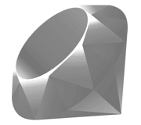
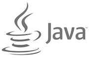

Documentation
Build scalable newsfeeds & activity streams in a few hours instead of weeks
Introduction to the API
Hi there!
Stream allows you to build scalable newsfeed and activity streams in hours instead of weeks. The documentation will get you up and running quickly. At the moment we have official clients for Ruby, JS/Node, Python, PHP and Java. Furthermore there are also example apps and Framework integrations available for Rails, Django and Laravel. Please contact us at support@getstream.io if you have questions or run into trouble with the documentation. Please refer to the REST docs if you want to write your own API client for Stream.
- Select your Client:
- 


- 
Next to our official clients, you can find community contributed clients and framework integrations.
Setup your client
First install the client as specified below:
gem install "stream-ruby"npm install getstream --save
bower install getstreampip install stream-python// install using composer
{
"require": {
"get-stream/stream": "$VERSION"
}
}// Add the following dependency and repository to your pom.xml file
<dependency>
<groupId>io.getstream.client</groupId>
<artifactId>stream-repo-okhttp</artifactId>
<version>0.1-RC2</version>
</dependency>The source code can be found on Github.
To instantiate the client you need an API key and Secret. You can find these on the dashboard.
You're currently not logged in. Quickly register using Github to get your API key.
# Instantiate a new client
require 'stream'
client = Stream::Client.new('YOUR_API_KEY', 'API_KEY_SECRET')
# Find your API keys here https://getstream.io/dashboard/var stream = require('getstream');
// Instantiate a new client (server side)
client = stream.connect('YOUR_API_KEY', 'API_KEY_SECRET', 'SITE_ID');
// Instantiate a new client (client side)
client = stream.connect('YOUR_API_KEY', null, 'SITE_ID');
// Find your API keys here https://getstream.io/dashboard/# Instantiate a new client
import stream
client = stream.connect('YOUR_API_KEY', 'API_KEY_SECRET')
# Find your API keys here https://getstream.io/dashboard/// Instantiate a new client
$client = new GetStream\Stream\Client('YOUR_API_KEY', 'API_KEY_SECRET');
// Find your API keys here https://getstream.io/dashboard/import io.getstream.client.config.ClientConfiguration;
import io.getstream.client.model.feeds.Feed;
ClientConfiguration streamConfig = new ClientConfiguration();
StreamClient streamClient = new StreamClientImpl(streamConfig, "API_KEY", "API_SECRET");Adding & Removing activities
The activity fields are based on the activity stream spec. This is best explained with an example. For the activity "Alessandro pinned Fuerteventura to his board Places to Visit". The actor in this activity is Alessandro, the verb is "pin", the object is Fuerteventura and the board places to visit is the target.
# Instantiate a feed object
user_feed_1 = client.feed('user', '1')
# Add an activity to the feed, where actor, object and target are references to objects (`Alessandro`, `Fuerteventura`, `Places to Visit`)
activity_data = {:actor => "User:2", :verb => "pin", :object => "Place:42", :target => "Board:1"}
activity_response = user_feed_1.add_activity(activity_data)// Instantiate a feed object server side
user1 = client.feed('user', '1');
// Instantiate a feed object client side using a token the generated server side ($token = user1.token;)
user1 = client.feed('user', '1', $token);
// Add an activity to the feed
activity = {"actor": "User:2", "verb": "pin", "object": "Place:42", "target": "Board:1"};
user1.addActivity(activity, function(error, response, body) { /* callback */ });# Instantiate a feed object
user_feed_1 = client.feed('user', '1')
# Add an activity to the feed, where actor, object and target are references to objects (`Alessandro`, `Fuerteventura`, `Places to Visit`)
activity_data = {"actor": "User:2", "verb": "pin", "object": "Place:42", "target": "Board:1"}
activity_response = user_feed_1.add_activity(activity_data)// Instantiate a feed object
$user_feed_1 = $client->feed('user', '1');
// Add an activity to the feed, where actor, object and target are references to objects (`Alessandro`, `Fuerteventura`, `Places to Visit`)
$data = [
"actor"=>"User:2",
"verb"=>"pin",
"object"=>"Place:42",
"target"=>"Board:1"
];
$user_feed_1->addActivity($data);// Instantiate a feed object
Feed feed = streamClient.newFeed("user", "1");
// Create an activity service
FlatActivityServiceImpl<SimpleActivity> flatActivityService = feed.newFlatActivityService(SimpleActivity.class);
// Add an activity to the feed, where actor, object and target are references to objects (`Alessandro`, `Fuerteventura`, `Places to Visit`)
SimpleActivity activity = new SimpleActivity();
activity.setActor("User:2");
activity.setObject("Place:42");
activity.setVerb("pin");
activity.setTarget("Board:1");
SimpleActivity response = flatActivityService.addActivity(activity);The basic arguments for adding activities are shown below.
Using the above fields is possible to express any activity.
The id of the activity created will be returned by this APIs endpoint; activity ids are valid Type 1 UUIDs ( rfc4122 ) eg. e561de8f-00f1-11e4-b400-0cc47a024be0
Stream also allows you to specify custom data to add to the activity. The example below shows how you would include custom information for a running activity.
# Create a bit more complex activity
activity_data = {:actor => 'User:1', :verb => 'run', :object => 'Exercise:42'
:course => {:name => 'Golden Gate park', :distance => 10},
:participants => ['Thierry', 'Tommaso'],
:started_at => DateTime.now()
}
activity_response = user_feed_1.add_activity(activity_data)// Create a bit more complex activity
activity = {'actor': 'User:1', 'verb': 'run', 'object': 'Exercise:42'
'course': {'name': 'Golden Gate park', 'distance': 10},
'participants': ['Thierry', 'Tommaso'],
'started_at': new Date()
};
user1.addActivity(activity, function(error, response, body) { /* callback */ });# Create a bit more complex activity
activity_data = {'actor': 'User:1', 'verb': 'run', 'object': 'Exercise:42'
'course': {'name': 'Golden Gate park', 'distance': 10},
'participants': ['Thierry', 'Tommaso'],
'started_at': datetime.datetime.now()
};
user_feed_1.add_activity(activity_data)// Create a bit more complex activity
$now = new \DateTime("now", new \DateTimeZone('Pacific/Nauru'));
$data = ['actor' => 'User:1', 'verb' => 'run', 'object' => 1,
'course' => ['name'=> 'Golden Gate park', 'distance'=> 10],
'participants' => ['Thierry', 'Tommaso'],
'started_at' => $now
];
$user_feed_1->addActivity($data);// You can add custom data to your activities
// Here's an example on how to do it: https://github.com/GetStream/stream-java/blob/master/stream-repo-apache/src/test/java/io/getstream/client/example/mixtype/MixedType.javaThe server returns the serialized activity including the activity id.
{"actor"=>"User:1", "course"=>{"distance"=>10, "name"=>"Golden Gate park"}, "id"=>"ef696c12-69ab-11e4-8080-80003644b625", "object"=>"Exercise:42", "participants"=>["Thierry", "Tommaso"], "started_at"=>"2014-11-11T15:06:16+01:00", "target"=>nil, "time"=>"2014-11-11T14:06:30.494", "verb"=>"run"} {"actor"=>"User:1", "course"=>{"distance"=>10, "name"=>"Golden Gate park"}, "id"=>"ef696c12-69ab-11e4-8080-80003644b625", "object"=>"Exercise:42", "participants"=>["Thierry", "Tommaso"], "started_at"=>"2014-11-11T15:06:16+01:00", "target"=>nil, "time"=>"2014-11-11T14:06:30.494", "verb"=>"run"} {"actor"=>"User:1", "course"=>{"distance"=>10, "name"=>"Golden Gate park"}, "id"=>"ef696c12-69ab-11e4-8080-80003644b625", "object"=>"Exercise:42", "participants"=>["Thierry", "Tommaso"], "started_at"=>"2014-11-11T15:06:16+01:00", "target"=>nil, "time"=>"2014-11-11T14:06:30.494", "verb"=>"run"} {"actor"=>"User:1", "course"=>{"distance"=>10, "name"=>"Golden Gate park"}, "id"=>"ef696c12-69ab-11e4-8080-80003644b625", "object"=>"Exercise:42", "participants"=>["Thierry", "Tommaso"], "started_at"=>"2014-11-11T15:06:16+01:00", "target"=>nil, "time"=>"2014-11-11T14:06:30.494", "verb"=>"run"} You can remove activities by specifying the activities' ID. Alternatively if you've specified a foreign_id when creating the activity, you can remove it using the foreign id.
# Remove an activity by its id
user_feed_1.remove_activity('e561de8f-00f1-11e4-b400-0cc47a024be0')
# Remove activities with foreign_id 'tweet:1'
user_feed_1.remove_activity('tweet:1', foreign_id=true)// Remove an activity by its id
user1.removeActivity("e561de8f-00f1-11e4-b400-0cc47a024be0");
// Remove activities foreign_id 'tweet:1'
user1.removeActivity({foreignId: 'tweet:1'});# Remove an activity by its id
user_feed_1.remove_activity("e561de8f-00f1-11e4-b400-0cc47a024be0")
# Remove activities with foreign_id 'tweet:1'
user_feed_1.remove_activity(foreign_id='tweet:1')// Remove an activity by its id
$user_feed_1->removeActivity("e561de8f-00f1-11e4-b400-0cc47a024be0");
// Remove activities with foreign_id 'tweet:1'
$user_feed_1->removeActivity('tweet:1', true)// Remove an activity by its id
feed.deleteActivity("e561de8f-00f1-11e4-b400-0cc47a024be0");
// Remove activities by their foreign_id
feed.deleteActivityByForeignId("tweet:1");Batch insert
Multiple activities can be added with a single batch insert operation. This is very convenient when importing data to GetStream.
activities = [
{:actor => 'User:1', :verb => 'tweet', :object => 'Tweet:1'},
{:actor => 'User:2', :verb => 'watch', :object => 'Movie:1'}
]
user_feed_1.add_activities(activities)activities = [
{'actor': 'User:1', 'verb': 'tweet', 'object': 'Tweet:1'},
{'actor': 'User:2', 'verb': 'watch', 'object': 'Movie:1'}
];
user1.addActivities(activities, function(error, response, body) { /* callback */ });activities = [
{'actor': 'User:1', 'verb': 'tweet', 'object': 'Tweet:1'},
{'actor': 'User:2', 'verb': 'watch', 'object': 'Movie:1'}
]
user_feed_1.add_activities(activities)$activities = array(
array('actor' => 'User:1', 'verb' => 'tweet', 'object' => 'Tweet:1'),
array('actor' => 'User:2', 'verb' => 'watch', 'object' => 'Movie:1')
);
$user_feed_1->addActivities($activities);// Not supported yetThe API will return a list containing the activity ids.
Retrieving activities
The example below explains how to retrieve the activities in the feed.
# Get activities from 5 to 10 (slow pagination)
result = user_feed_1.get(:limit=>5, :offset=>5)
# Get 5 activities with id less than the given UUID (Recommended & faster)
result = user_feed_1.get(:limit=>5, :id_lt=>'e561de8f-00f1-11e4-b400-0cc47a024be0')// Get 5 activities with id less than the given UUID (Recommended & faster)
user1.get({limit:5, id_lt:"e561de8f-00f1-11e4-b400-0cc47a024be0"}, function(error, response, body) { /* callback */ });
// Get activities from 5 to 10 (slow pagination)
user1.get({limit:5, offset:5}, function(error, response, body) { /* callback */ });
# Get activities from 5 to 10 (slow pagination)
result = user_feed_1.get(limit=5, offset=5)
# Get 5 activities with id less than the given UUID (Recommended & faster)
result = user_feed_1.get(limit=5, id_lt="e561de8f-00f1-11e4-b400-0cc47a024be0")
# Get activities from 5 to 10 using limit and offset
$results = $user_feed_1->getActivities(5, 10);
# Get 5 activities with id less than the given UUID (Recommended & faster)
$results = $user_feed_1->getActivities(0, 5, id_lte=$last_id);
// Get activities from 5 to 10 (using offset pagination)
FeedFilter filter = new FeedFilter.Builder().withLimit(5).withOffset(5).build();
List<SimpleActivity> activities = flatActivityService.getActivities(filter).getResults();
// Filter on an id less than the given UUID
aid = "e561de8f-00f1-11e4-b400-0cc47a024be0";
FeedFilter filter = new FeedFilter.Builder().withIdLowerThan(aid).withLimit(5).build();
List<SimpleActivity> activities = flatActivityService.getActivities(filter).getResults();The activities in the feed are sorted on a UUID based on time. We recommend you paginate using id_lt. This performs far better than traditional offset based pagination. The full list of supported paramaters is included below.
Following feeds
Allows a feed to follow the feed specified in the target parameter.
By default the most recent 300 existing activities in the target feed will be added to the follower feed ( asynchronously ), this can be changed via the activity_copy_limit parameter
# Follow feed 42
user_feed_1.follow('flat', '42')// Follow flat 42
user1.follow('flat', '42');# Follow feed 42
user_feed_1.follow('flat', '42')# Follow feed 42
$user_feed_1->followFeed('flat', '42');// Follow feed 42
feed.follow(flat", "42");
Unfollowing feeds
Allows a feed to stop following the feed specified in the target parameter.
Existing activities in the feed coming from the target feed will be purged ( asynchronously )
# Stop following feed 42
user_feed_1.unfollow('flat', '42')// Stop following feed 42
user1.unfollow('flat', '42');# Stop following feed 42
user1.unfollow('flat', '42')# Stop following feed 42
user1->unfollow('flat', '42');// Stop following feed 42
feed.unfollow(flat", "42");Reading feed followers
Returns a paginated list of the given feed's followers
# list followers
user_feed_1.followers(0, 10)// List followers
user1.followers({limit: '10', offset: '10'});# list followers
user_feed_1.followers(offset=0, limit=10)// list followers
$user_feed_1->followers(0, 10);// Retrieve first 10 followers of a feed
FeedFilter filter = new FeedFilter.Builder().withLimit(10).build();
List<FeedFollow> followersPaged = feed.getFollowers(filter);Reading following feeds
Returns a paginated list of the feeds which are following the feed.
# Retrieve 10 feeds followed by user_feed_1
user_feed_1.following(10)
# Retrieve 10 feeds followed by user_feed_1 starting from the 11th
user_feed_1.following(10, 10)
# Check if user_feed_1 follows specific feeds
user_feed_1.following(0, 2, filter=['user:42', 'user:43'])// Retrieve last 10 feeds followed by user_feed_1
user1.following({offset: 0, limit: 10});
// Retrieve 10 feeds followed by user_feed_1 starting from the 11th
user1.following({offset: 10, limit: 10});
// Check if user1 follows specific feeds
user1.following({offset: 0, limit: 2, filter: ['user:42', 'user:43']})# Retrieve last 10 feeds followed by user_feed_1
user_feed_1.following(offset=0, limit=10)
# Retrieve 10 feeds followed by user_feed_1 starting from the 11th
user_feed_1.following(offset=10, limit=10)
# Check if user_feed_1 follows specific feeds
user_feed_1.following(offset=0, limit=2, feeds=['user:42', 'user:43'])// Retrieve 10 feeds followed by $user_feed_1
$user_feed_1->following(0, 10);
// Retrieve 10 feeds followed by $user_feed_1 starting from the 10th (2nd page)
$user_feed_1->following(10, 20);
// Check if $user_feed_1 follows specific feeds
$user_feed_1->following(0, 2, ['user:42', 'user:43']);// Retrieve first 10 followers of a feed
FeedFilter filter = new FeedFilter.Builder().withLimit(10).build();
List<FeedFollow> followingPaged = feed.getFollowing(filter);Realtime updates
Stream allows you to listen to feed changes in realtime.
At this point you can only subscribe to changes in realtime with javascript using GetStream's js client. If you are not using it already, you can obtain it from here.
Once you have included the js client in your pages you can subscribe to real time notifications this way:
<script type="text/javascript" src="/path/to/getstream.js"></script>
<script type="text/javascript">
var client = stream.connect('YOUR_API_KEY', null, 'SITE_ID');
var user1 = client.feed('user', '1', '<%= user_feed_1.token %>');
function callback(data) {
console.log(data);
}
function failCallback(data) {
alert('something went wrong, check the console logs');
console.log(data);
}
user1.subscribe(callback).then(function(){}, failCallback);
</script><script type="text/javascript">
function failCallback(data) {
alert('something went wrong, check the console logs');
console.log(data);
}
user1 = client.feed('user', '1', token);
user1.subscribe(function callback(data) {
alert(data);
}).then(function(){}, failCallback);
</script><script type="text/javascript" src="/path/to/getstream.js"></script>
<script type="text/javascript">
var client = stream.connect('YOUR_API_KEY', null, 'SITE_ID');
var user1 = client.feed('user', '1', '{{ user_feed_1.token }}');
function callback(data) {
console.log(data);
}
function failCallback(data) {
alert('something went wrong, check the console logs');
console.log(data);
}
user1.subscribe(callback).then(function(){}, failCallback);
</script><script type="text/javascript" src="/path/to/getstream.js"></script>
<script type="text/javascript">
var client = stream.connect('YOUR_API_KEY', null, 'SITE_ID');
var user1 = client.feed('user', '1', '<?php echo($user_feed_1->getToken()); ?>');
function callback(data) {
console.log(data);
}
function failCallback(data) {
alert('something went wrong, check the console logs');
console.log(data);
}
user1.subscribe(callback).then(function(){}, failCallback);
</script>// feedToken is generated server-side
String token = feed.getToken();
// and used in your client-side JS code
<script type="text/javascript" src="/path/to/getstream.js"></script>
<script type="text/javascript">
var client = stream.connect('YOUR_API_KEY', null, 'SITE_ID');
var user1 = client.feed('user', '1', 'feedToken');
function callback(data) {
console.log(data);
}
function failCallback(data) {
alert('something went wrong, check the console logs');
console.log(data);
}
user1.subscribe(callback).then(function(){}, failCallback);
</script>The data returned is different per feed type. Notification feeds include unread and unseen counts. For the flat feed we return activities and for the aggregated & notification feeds we return aggregated activities. A full example is shown below:
// Realtime notification data format
{
"data": {
"deleted": "array activities or aggregated activities",
"new": "array activities or aggregated activities",
"unread":"int only sent for notification feeds",
"unseen":"int only sent for notification feeds",
"published_at":"time in iso format",
},
"channel":"",
}
Tutorials
We're currently working on a few tutorials which clarify how everything fits together. The first tutorial teaches you how to write a scalable twitter type of app.
iOS & Android
Many of our users build apps which integrate with native iOS and Android apps. The best approach is to use Stream's API from your server side codebase. We currently support Ruby, Python, PHP, Java and Node. Subsequently you enrich and forward this data via your own mobile API. In general we don't recommend writing data to Stream directly from a client side platform.
Feel free to get in touch if you're running into trouble.
Creating Feeds
By default we setup 4 feeds for you. user, flat, aggregated and notification. These 4 feeds cover the use cases of most social sites. The user feed is the personal feed for each user. The flat and aggregated feed are meant to store content from people you follow. Lets go through an example. Say that Alessandro pins an item and Thijs follows Alessandro. You would add the activity to Alessandro's user feed. You also need to tell Stream that Thijs' flat feed should follow Alessandro. Now when you add an activity to Alessandro's user feed it shows up in Thijs' flat feed
alessandro = client.feed('user', '1')
thijs = client.feed('flat', '2')
# Thijs' flat feed follows Alessandro
thijs.follow('user', '1')
# Alessandro adds an activity
activity_data = {:actor => 'User:1', :verb => 'pin', :object => 'Item:6'}
alessandro.add_activity(activity_data)
# Which will show up in Thijs' feed
thijs.get(:limit=>5)alessandro = client.feed('user', '1');
thijs = client.feed('flat', '2');
// Thijs' flat feed follows Alessandro
thijs.follow('user', '1');
// Alessandro adds an activity
activity = {'actor': 'User:1', 'verb': 'pin', 'object': 'Item:6'};
alessandro.addActivity(activity, callback);
// Which will show up in Thijs' feed
thijs.get({limit:5}, callback);alessandro = client.feed('user', '1')
thijs = client.feed('flat', '2')
# Thijs' flat feed follows Alessandro
thijs.follow('user', '1')
# Alessandro adds an activity
activity_data = {'actor': 'User:1', 'verb': 'pin', 'object': 'Item:6'}
alessandro.add_activity(activity_data)
# Which will show up in Thijs' feed
thijs.get(limit=5)$alessandro = $client->feed('user', '1');
$thijs = $client->feed('flat', '2');
// Thijs' flat feed follows Alessandro
$thijs->followFeed('user', '1');
// Alessandro adds an activity
$data = [
"actor_id"=>"User:1",
"verb"=>"pin",
"object_id"=>"Item:6"
];
$alessandro->addActivity($data);
// Which will show up in Thijs' feed
$thijs->getActivities(0, 5);
Feed alessandroFeed = streamClient.newFeed("user", "1");
Feed thijsFeed = streamClient.newFeed("flat", "1");
// Thijs' flat feed follows Alessandro
thijsFeed.follow("user", "1");
// Alessandro adds an activity
SimpleActivity activity = new SimpleActivity();
activity.setActor("User:1");
activity.setObject("Item:6");
activity.setVerb("pin");
SimpleActivity response = flatActivityService.addActivity(activity);
// Which will show up in Thijs' feed
List<SimpleActivity> activities = thijsFeed.getActivities().getResults();For many applications these 4 default feeds suffice. You can however add as many feeds as you like in the dashboard. Wanelo for instance has in addition to the aforementioned 4 feeds a separate feed for sites.
There are 3 core types of feeds. Flat feeds, Aggregated feeds and Notification feeds. Aggregated feeds allow you to specify an aggregation rule. This allows your feed to show messages such as: "Thierry, Alessandro and 3 other people like your picture" Notification feeds are a specific implementation of Aggregated Feeds. They allow you to get counts of the number of unseen and unread notifications. However as they are heavier to work with they are limited to 100 notifications per feed.
Flat Feeds
Flat feeds are the default type of feed in Stream, as the name suggests activities are stored without any grouping. You can create new feeds in the dashboard. There are several options you can configure.
Aggregated feeds
Aggregated Feeds allow you to specify an aggregation format. You can create new feeds in the dashboard. There are several options you can configure.
The aggregation rule uses the Jinja2 template syntax. The feed will group all activities which have the same key as determined by the aggregation format. The following variables are available:
verb.id the unique internal id (generated by GetStream) to the activity verb (eg. 42)
verb.infinitive the verb as it is send to the APIs (eg. "like")
time the activity creation date and time (or the value sent to APIs)
object the activity object as it is sent to the APIs (eg. Item:13)
target the activity target (eg. Place:9)
actor the activity actor (eg. User:9)
In addition you can use any of the custom values you've provided when adding the activity. The options for strftime are documented here. Furthermore you can also use basic if statements in your aggregation format. This allows you to support quite complex aggregation scenarios. If you need a more complex aggregation rule please contact support@getstream.ioHere are some more examples of how you can aggregate.
Per actor, verb id and hour: {{ actor }}_{{ verb.id }}_{{ time.strftime('%H') }} Per target and day: {{ target }}_{{ time.strftime('%j') }} Complex example using an if statement {% if verb.infinitive == 'like' %}{{ object }}{% else %}{{ id }}{% endif %}
Notification Feeds
Notification feeds are similar to Aggregated feeds. There are two key differences though which make them more suited to building notification systems.
- Notifications can be marked as seen or read
- You get a realtime count of the number of unseen and unread notifications
The seen and read fields allow you to track different types of user interaction. Take for example the notification system on Facebook. If you click the notification icon, all notifications get marked as seen. However an individual notification only gets marked as read when you click on it. You can set the mark read and seen when reading the feed.
Here's the example using the various clients
# Mark all activities as seen
result = notification_feed.get(:limit=>5, :offset=>0, :mark_seen=>true)
# Mark some activities as read
result = notification_feed.get(:limit=>5, :mark_read=>['activity_id_1', 'activity_id_2'])// Mark all activities as seen
notificationFeed.get({limit:5, mark_seen:true}, callback);
// Mark some activities as read
notificationFeed.get({limit:5, mark_read: ['activityIdOne', 'activityIdTwo']}, callback);# Mark all activities as seen
result = notification_feed.get(limit=5, mark_seen=True)
# Mark some activities as read
result = notification_feed.get(limit=5, mark_read=[activity_id, activity_id_2])# Mark all activities as seen
$options = array('mark_seen' => true);
$results = $notification_feed->getActivities(0, 10, $options);
# Mark some activities as read
$options = array('mark_read' => array('activity_id_1', 'activity_id_2'));
$results = $notification_feed->getActivities(0, 10, $options);
// Mark all activities as seen and read
NotificationActivityServiceImpl<SimpleActivity> notificationActivityService = feed.newNotificationActivityService(SimpleActivity.class);
notificationActivityService.getActivities(new FeedFilter.Builder().build(), true, true);
// Mark one activity as read by its id
MarkedActivity marker = new MarkedActivity.Builder().withActivityId("e561de8f-00f1-11e4-b400-0cc47a024be0").build();
notificationActivityService.getActivities(new FeedFilter.Builder().build(), marker, new MarkedActivity.Builder().build());Often you'll want to listen to changes in realtime for notification feeds. This is explained in the section on realtime updates.
Targetting & "TO" support
The "TO" field gives you finegrained control over which feeds receive a certain activity. This is useful when building functionality such as @mentions or notification feeds. The "TO" field in the activity allows you to specify a list of feeds which should show the activity. An example is shown below:
# Add an activity and push it to other feeds using the `to` field
# especially useful for notification style feeds or @mention functionality
data = [
:actor_id => "1",
:verb => "like",
:object_id => "3",
:to => ["user:44", "user:45"]
];
user_feed_1.add_activity(data);// Add an activity and push it to other feeds using the `to` field
// especially useful for notification style feeds or @mention functionality
to = ['user:2', 'user:3']
activity = {'to': to, 'actor': 1, 'verb': 'tweet', 'object': 1, 'foreign_id': 'tweet:1'};
user1.addActivity(activity, callback);# Add an activity and push it to other feeds using the `to` field
# especially useful for notification style feeds or @mention functionality
activity = {
"actor_id":"1",
"verb":"like",
"object_id":"3",
"to":["user:44", "user:45"]
};
user_feed_1.add_activity(activity);// Add an activity and push it to other feeds using the `to` field
// especially useful for notification style feeds or @mention functionality
$data = [
"actor_id"=>"1",
"verb"=>"like",
"object_id"=>"3",
"to"=>["user:44", "user:45"]
];
$user_feed_1->addActivity($data);// Add an activity and push it to other feeds using the `to` field
// especially useful for notification style feeds or @mention functionality
SimpleActivity activity = new SimpleActivity();
activity.setActor("user:1");
activity.setObject("tweet:1");
activity.setVerb("tweet");
activity.setForeignId("tweet:1");
activity.setTo(Arrays.asList("user:44", "user:45"));
SimpleActivity response = flatActivityService.addActivity(activity);The TO functionality is quite powerful. It's also useful when building team, organization and topic feeds. You can read more about that in the next section.
Teams, organizations & topics
A common use case is to have teams, organizations or topics in your app. One of our customers for instance runs a football community. Updates about a player should also be added to the team's feed. Stream supports this by adding the activity to the player's feed and specifying the target feeds in the "TO" field. You can think of it as the CC functionality of email.
# The TO field ensures the activity is send to the player, match and team feed
activity_data = {:actor => 'Player:Suarez', :verb => 'foul', :object => 'Player:Ramos',
:match => {:name => 'El Clsico', :id => 10},
:to => ['team:barcelona', 'match:1'],
}
player_feed_1.add_activity(activity_data)// The TO field ensures the activity is send to the player, match and team feed
activity = {'actor': 'Player:Suarez', 'verb': 'foul', 'object': 'Player:Ramos'
'match': {'name': 'El Clsico', 'id': 10},
'to': ['team:barcelona', 'match:1']
};
playerFeed1.addActivity(activity, callback);# The TO field ensures the activity is send to the player, match and team feed
activity_data = {'actor': 'Player:Suarez', 'verb': 'foul', 'object': 'Player:Ramos'
'match': {'name': 'El Clsico', 'id': 10},
'to': ['team:barcelona', 'match:1']
};
player_feed_1.add_activity(activity_data)// The TO field ensures the activity is send to the player, match and team feed
$data = ['actor' => 'Player:Suarez', 'verb' => 'foul', 'object' => 'Player:Ramos',
'match' => ['name'=> 'El Clsico', 'id'=> 10],
'to' => ['team:barcelona', 'match:1']
];
$player_feed_1->addActivity($data);# The TO field ensures the activity is send to the player, match and team feed
// Create a new activity
SimpleActivity activity = new SimpleActivity();
activity.setActor("Player:Suarez");
activity.setObject("Player:Ramos");
activity.setVerb("foul");
SimpleActivity response = flatActivityService.addActivity(activity);By default only the user, flat, aggregated and notification feed are setup for you. You'll need to go to the dashboard and create feeds called team, player and match for the above example to work.
Uniqueness & Foreign id
Stream handles uniqueness in 3 different ways depending on the values of the foreign_id and time fields.
If time is not provided: Stream always creates a new activity.
# the data is the same but two different activities are created
activity_data = {'actor': 1, 'verb': 'pin', 'object': 1, 'target': '1'}
first_activity_id = user_feed_1.add_activity(activity_data)['id']
second_activity_id = user_feed_1.add_activity(activity_data)['id']
# first_activity_id and second_activity_id are differentIf only the time field is provided: Uniqueness will be enforced on activity data and time.
from datetime import datetime
now = datetime.utcnow()
activity = {
"actor_id":"1",
"verb":"like",
"object_id":"3",
"time": now
];
# the time and the activity data are the same
first_activity_id = user_feed_1.add_activity(activity)['id']
second_activity_id = user_feed_1.add_activity(activity)['id']
# hence the first activity id and second are equalIf both time and foreign_id fields are provided: Uniqueness will be enforced on the combination of time & foreign_id.
from datetime import datetime
now = datetime.utcnow()
first_activity = {
"actor_id":"1",
"verb":"like",
"object_id":"3",
"time": now,
"foreign_id": "like:3"
];
first_activity_id = user_feed_1.add_activity(first_activity)['id']
second_activity = {
"actor_id":"1",
"verb":"like",
"object_id":"3",
"time": now,
"extra": "extra_value",
"foreign_id": "like:3"
]
second_activity_id = user_feed_1.add_activity(activity)['id']
# foreign_id and time are the same for both activities
# hence only one activity is created and first and second id are equal
What to store
Stream allows you to store custom data that is not part of the standard activity schema. It is important to remember that all the data sent to Stream is denormalised.
Let us take these two activities for example:
{
"actor": 13,
"verb": 'like',
"object": 17,
"user_data": {
"name": "thierry",
"profile_pic": "http://url/to/thierry/pic"
}
}
{
"actor": 11,
"verb": 'pinned',
"object": 16,
"user_data": {
"name": "thierry",
"profile_pic": "http://url/to/thierry/pic"
}
}
The user_data field holds some informations about Thierry's user.
This is convenient when reading data from the feeds. It can however also become a problem.
For example, if Thierry now changes his profile picture the data stored in the feed will be out of date.
Since this data is denormalized there is no way to update it.
In general you should never store extra data on Stream if it gets updated often.
Instead you should store a reference to it. The example data from before would be sent to Stream like this:
{
"actor": 13,
"verb": "like",
"object": 17,
"user_id": 42
}
Framework integrations & example apps
To make it even easier to get started with GetStream.io we also offer framework integrations and example apps. If you're favourite framework is missing, be sure to get in touch.
The examples come in three flavours. The Rails, Django and Laravel examples show you how to build a Pinterest style application. The Parse example is a Facebook/Twitter style community where you can share your view. If you find these example interesting you might also want to have a look at our Twitter tutorial, which explains you how to build a scalable twitter clone using Django and GetStream.io.
Performance, Latency & Regions
You can view the current API status on the status page. In general you should expect your feed to load in about 60ms. The most common cause of slower performance is latency. You can improve this by selecting a data center close to you. We currently support these 4 locations:
- US East Virginia: us-east
- US West N. California: us-west
- Ireland: eu-west
- Japan: ap-northeast
client = Stream::Client.new('YOUR_API_KEY','API_KEY_SECRET', 'SITE_ID', :location => 'us-east')// connect to the us-east region
client = stream.connect('YOUR_API_KEY', 'API_KEY_SECRET', 'SITE_ID', {'location': 'us-east'});# connect to the us-east region
import stream
client = stream.connect('YOUR_API_KEY', 'API_KEY_SECRET', location='us-east')$client = new GetStream\Stream\Client('YOUR_API_KEY', 'API_KEY_SECRET');
$client->setLocation('us-east');ClientConfiguration streamConfig = new ClientConfiguration().setRegion(StreamRegion.US_EAST);
StreamClient streamClient = new StreamClientImpl(streamConfig, "API_KEY", "API_SECRET");Another common cause of slow newsfeed performance is the enrichment step. Often you'll send references to your database in the activities. When loading your newsfeed you need to run certain database queries to load the latest version of this data. In cases like this there are 2 things to keep in mind:
- Batch all the database queries. Never run N queries for N items in the feed
- Cache the lookup by primary key using a model layer cache (recommended only for large apps)
We're constantly working to make the API even faster. If you encounter any performance issues be sure to get in touch.
Batch follow
Multiple follow relationships can be created with a single batch insert operation. This is very convenient when importing data to GetStream.
# Batch following many feeds
follows = [
{:source => 'flat:1', :target => 'user:1'},
{:source => 'flat:1', :target => 'user:2'},
{:source => 'flat:1', :target => 'user:3'}
]
client.follow_many(follows)// Js client does not support this yet
// Please contact support if you need this feature# Batch following many feeds
follows = [
{'source': 'flat:1', 'target': 'user:1'},
{'source': 'flat:1', 'target': 'user:2'},
{'source': 'flat:1', 'target': 'user:3'}
]
client.follow_many(follows)// Php client does not support this yet
// Please contact support if you need this feature// Java client does not support this yet
// Please contact support if you need this featureThe API does not return any data.
Batch activity add
Allows you to add an activity to multiple feeds in one single request.
# adds 1 activity to many feeds in one request
feeds = ['flat:1', 'flat:2', 'flat:3', 'flat:4']
activity = {:actor => "User:2", :verb => "pin", :object => "Place:42", :target => "Board:1"}
client.add_to_many(activity, feeds)// Js client does not support this yet
// Please contact support if you need this feature# adds 1 activity to many feeds in one request
feeds = ['flat:1', 'flat:2', 'flat:3', 'flat:4']
activity = {"actor": "User:2", "verb": "pin", "object": "Place:42", "target": "Board:1"}
client.add_to_many(activity, feeds)// Php client does not support this yet
// Please contact support if you need this feature// Java client does not support this yet
// Please contact support if you need this featureImporting data
First of all, support will gladly help you import your data. So feel free to get in touch. There are two common scenarios when importing data:
- You want to import only follow relationships. Your feed will show new activities only.
- You want to import both follows and activities. Your feed will also show older data.
There are a few best practices to keep in mind:
- When importing both activities and follows, start with the activities. Your import will run substantially faster.
- Use batch operations where possible. add_activities is a lot quicker than repeated calls via add_activity.
- For large imports always contact support.
Data dumps
For large imports the best approach is to send us a dump of your data. Our preferred format is JSON, an example of a dump is shown below:
// start by adding multiple activities, grouped by feedId
{"instruction": "add_activities", "feedId": "user:1", "data": [{"actor": 1, "verb": "tweet", "object": 1, "foreign_id": "tweet:1"},{"actor": 2, "verb": "tweet", "object": 2, "foreign_id": "tweet:2"}]}
// follow instructions, grouped by feedId, flat:1 follows user:2 and user:3
{"instruction": "follow", "feedId": "flat:1", "data": ["user:2", "user:3"]}
// instructions are separated by newlines, flat:2 follows user:3 and user:4
{"instruction": "follow", "feedId": "flat:2", "data": ["user:3", "user:4"]}Next you should gzip the dump and send it to support. The dump allows us to skip the HTTP layer when importing and will often be 10 times faster than the equivalent imports via the APIs.
Webhook realtime updates
Stream can optionally send all the updates on your feeds to a webhook you manage. This allows for instance to process feed updates server side and trigger actions like email notifications or update your internal metrics.
The realtime updates are sent with POST requests, you will receive data in json format, updates are sent in batches (up to 100 activities per push)
[
[{
"deleted":[],
"new":[{"actor":"1","verb":"tweet","object":"1","target":null,"time":"2014-12-15T17:20:37.258","foreign_id":null,"id":"af781804-847e-11e4-8080-80012fb97b9e","tweet":"Hello world"}],
"published_at":"2014-12-15T17:20:37.263518+00:00",
"feed":"user:2"}
],
[{
"deleted":["38f81366-847f-11e4-9c94-0cc47a024be0"],
"new":[],
"published_at":"2014-12-15T17:20:37.263518+00:00",
"feed":"flat:1"}
]
]
SQS realtime updates
Stream can optionally send all the updates on your feeds to a Amazon SQS queue you own. This allows you to take advantage of SQS scale and consume the update messages at a desired rate.
The realtime updates are published on a SQS you own, you will receive data in json format, updates are sent in batches (up to 100 activities per push)
[
[{
"deleted":[],
"new":[{"actor":"1","verb":"tweet","object":"1","target":null,"time":"2014-12-15T17:20:37.258","foreign_id":null,"id":"af781804-847e-11e4-8080-80012fb97b9e","tweet":"Hello world"}],
"published_at":"2014-12-15T17:20:37.263518+00:00",
"feed":"user:2"}
],
[{
"deleted":["38f81366-847f-11e4-9c94-0cc47a024be0"],
"new":[],
"published_at":"2014-12-15T17:20:37.263518+00:00",
"feed":"flat:1"}
]
]